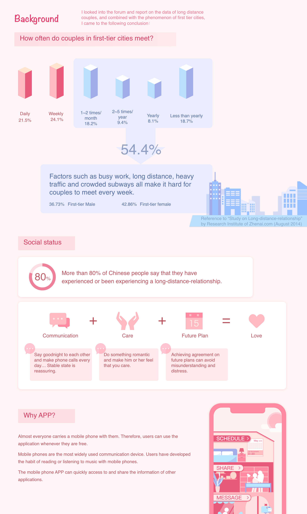
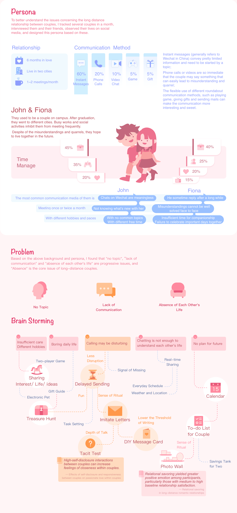
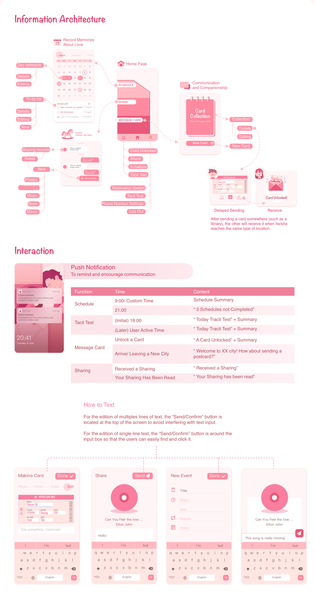
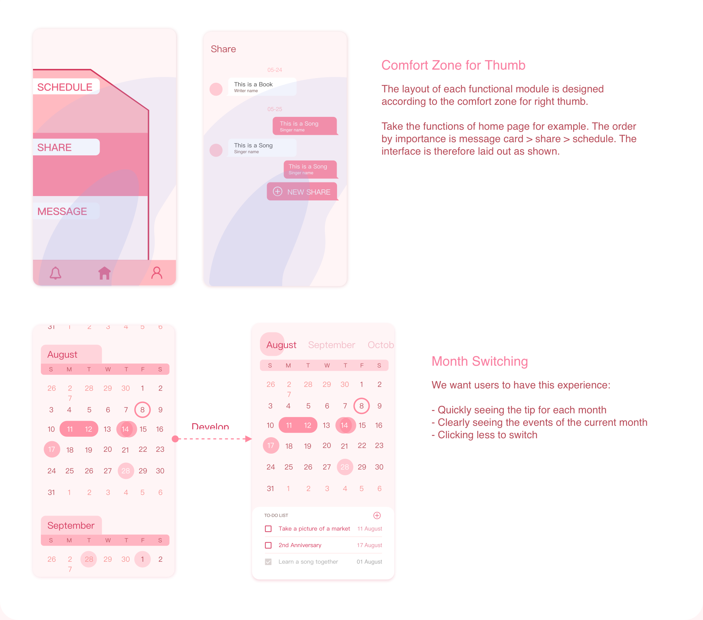
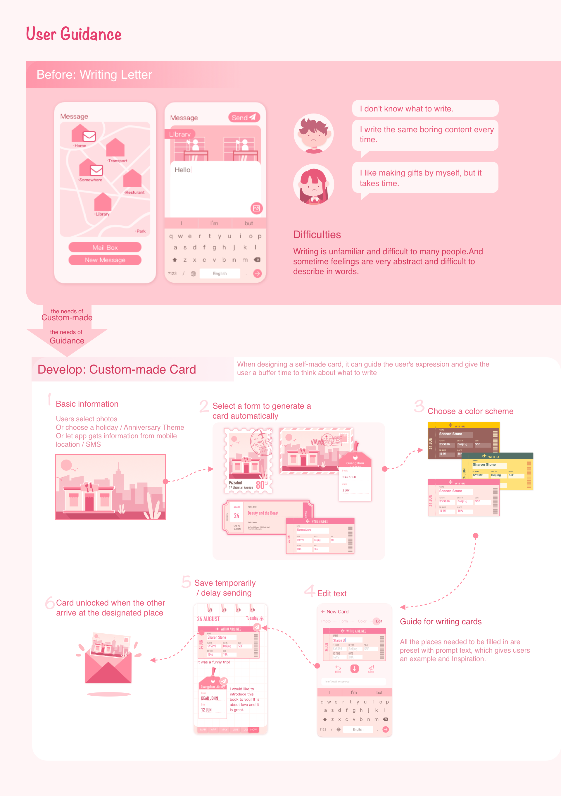
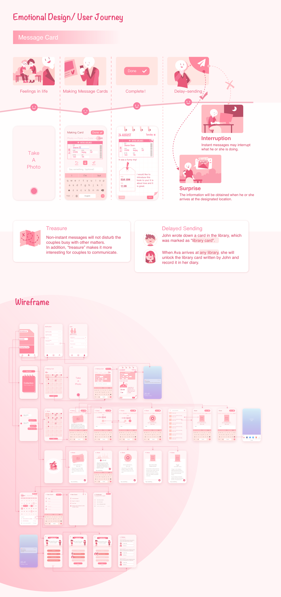
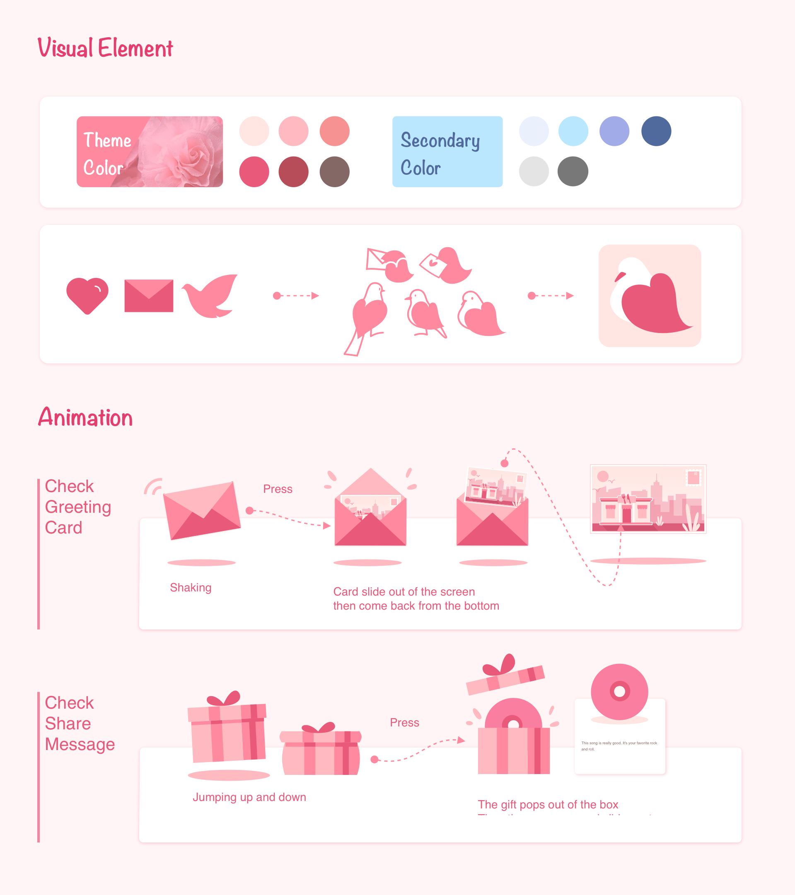
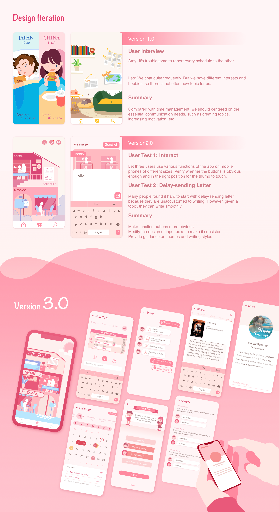

With U
I have seen many friends around me choose a long-distance-relationship, which is also a common phenomenon to the increasing couples in the whole nation.The lack of communication and companionship is the biggest obstacle for those who choose a long-distance-relationship. This application uses unique forms and methods like Delayed Sending, Gift Exchange and Create Topic to solve the communication problems such as the lack of companionship between long distance couples.
       